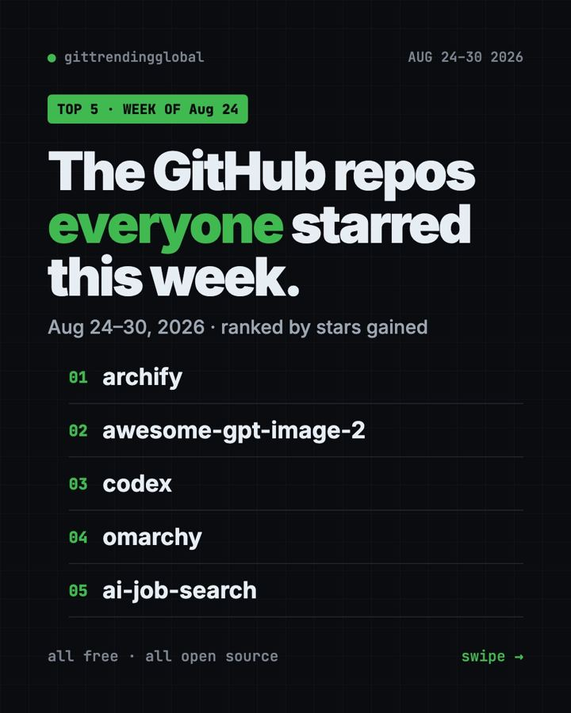
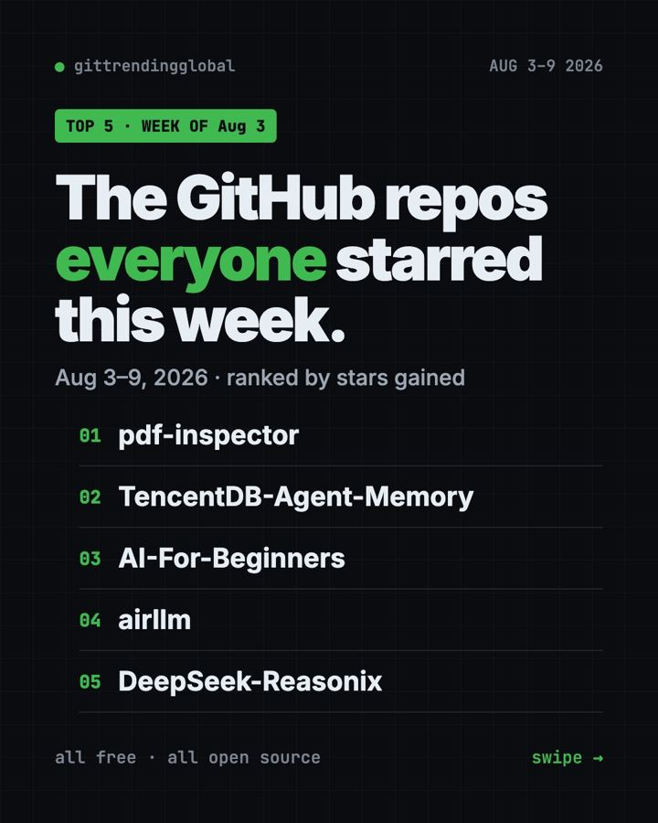
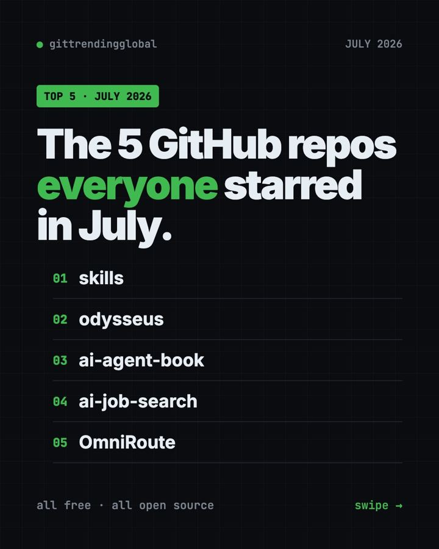
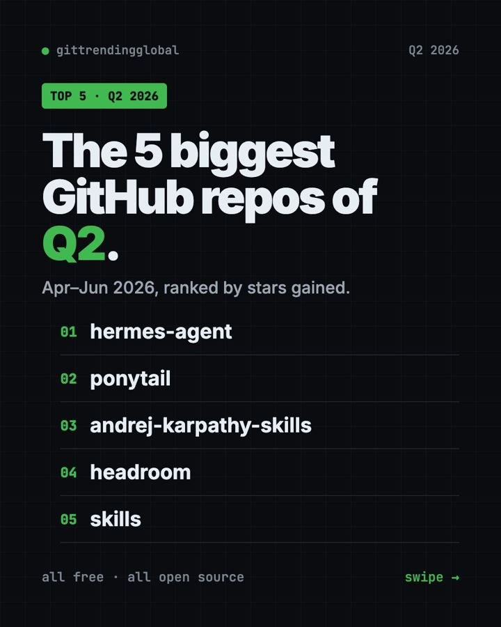
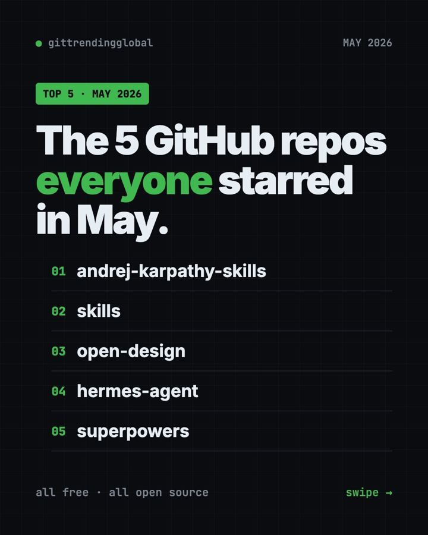
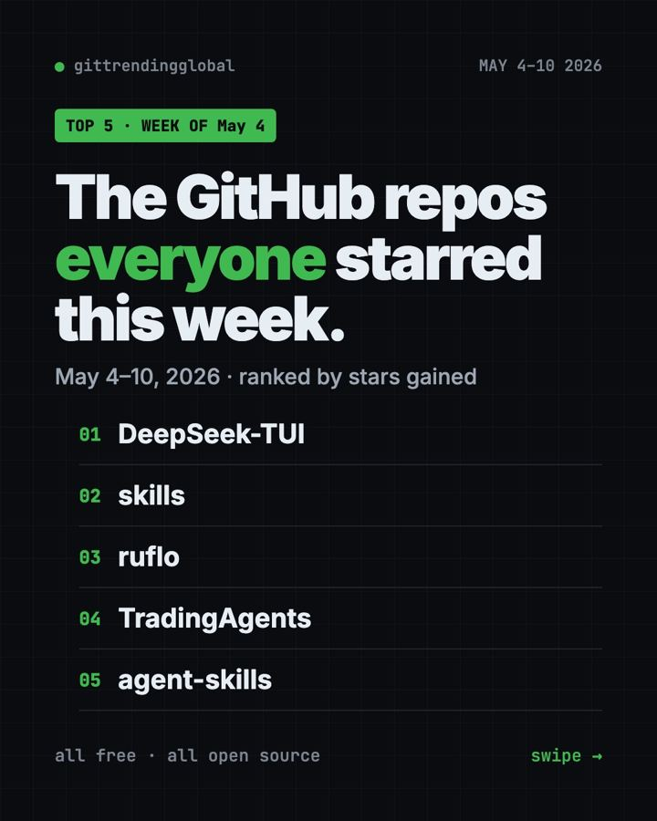
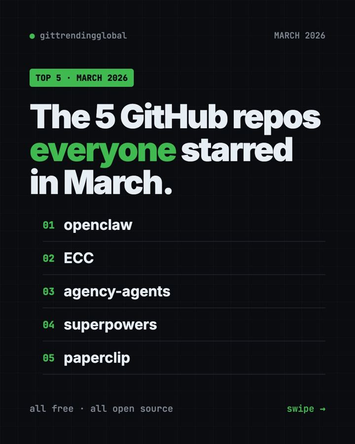
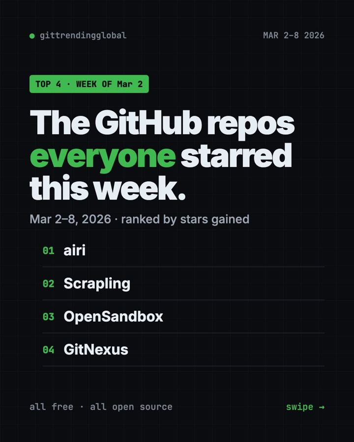
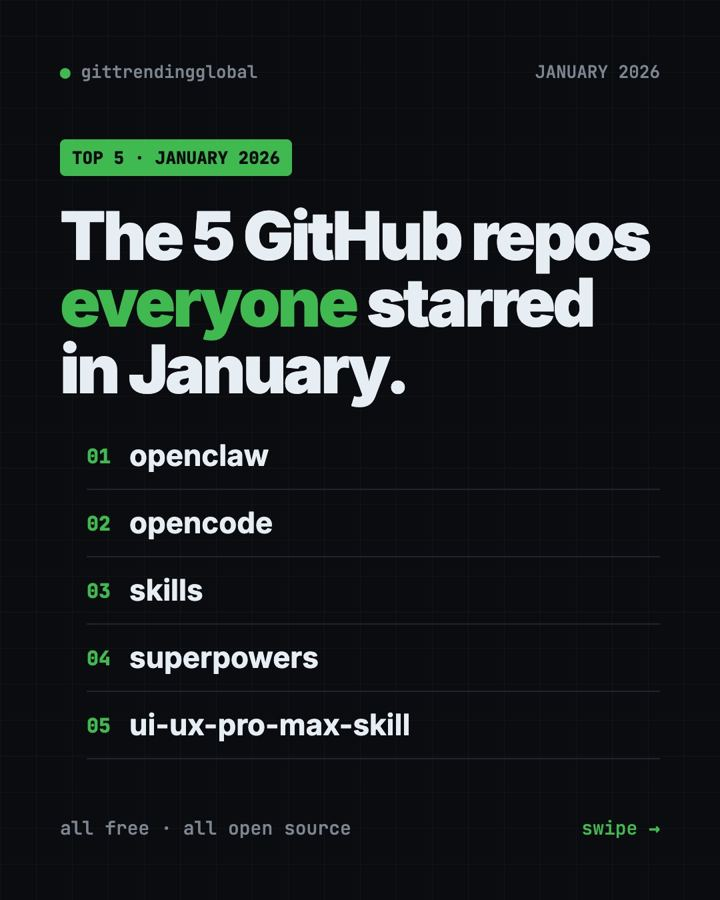

AI for Everyone
Free tools and news that matter if you work in Everyone.

The 5 GitHub repos that blew up in October 2026
The five most-starred new GitHub projects of October 2026, explained in plain words.

October 2026 in AI: Reality check before the big IPOs
OpenAI's lower revenue rattled stocks, fired safety researchers spoke out, ChatGPT got visual, Apple launched HomeView, and Anthropic prepared to go public.

PureMac: free up space on your Mac without a subscription
PureMac is a free, open-source Mac cleaner that removes junk, fully uninstalls apps, and never tracks you or tries to scare you.

Strata: run a big, private AI chatbot on your own gaming PC
A free one-click installer that runs a large Qwen AI model on a normal gaming PC, so your chats never leave your computer.

Tolaria: a free notes app where you own every file
Tolaria is a free, offline notes app that keeps your knowledge in plain text files you own, with full version history and no account.

Odysseus: your own private AI workspace, run on your own machine
Odysseus is a free, self-hosted AI workspace for chat, deep research, documents, email, notes and calendar, so your data stays with you.

Thaw: clean up your crowded Mac menu bar for free
Thaw is a free, open-source Mac app that hides, sorts and styles the cluttered icons in your menu bar, with no tracking and no account.

openGym: a free workout tracker where you own your data
A free workout and body-weight tracker you run yourself, with plans, guided sessions, 5,600+ exercises and no subscription or ads.
How AI changed every industry in 2026 (so far)
From layoffs and IPOs to health records, ads and court fights, here is how 2026's biggest AI stories hit each industry.

The 5 GitHub repos everyone starred this week (Oct 5–11, 2026)
The fastest-growing free tools on GitHub for Oct 5–11, 2026, ranked by stars gained.

The 5 GitHub repos everyone starred this week (Sep 28 – Oct 4, 2026)
The fastest-growing free tools on GitHub for Sep 28 – Oct 4, 2026, ranked by stars gained.

The 5 biggest GitHub repos of Q3 2026
The five open-source projects that dominated GitHub in Q3 2026.

The 5 GitHub repos that blew up in September 2026
The five most-starred new GitHub projects of September 2026, explained in plain words.

September 2026 in AI: Safety becomes the main story
OpenAI launched GPT-6 Astra and scrapped GPT-6.1, Nvidia bought Hugging Face, a court backed the Pentagon on Anthropic, and AI bosses signed a White House pledge.

The 5 GitHub repos everyone starred this week (Sep 21–27, 2026)
The fastest-growing free tools on GitHub for Sep 21–27, 2026, ranked by stars gained.

The 5 GitHub repos everyone starred this week (Sep 14–20, 2026)
The fastest-growing free tools on GitHub for Sep 14–20, 2026, ranked by stars gained.

The 5 GitHub repos everyone starred this week (Sep 7–13, 2026)
The fastest-growing free tools on GitHub for Sep 7–13, 2026, ranked by stars gained.

The 5 GitHub repos everyone starred this week (Aug 31 – Sep 6, 2026)
The fastest-growing free tools on GitHub for Aug 31 – Sep 6, 2026, ranked by stars gained.

The 5 GitHub repos everyone starred this week (Aug 24–30, 2026)
The fastest-growing free tools on GitHub for Aug 24–30, 2026, ranked by stars gained.

The 5 GitHub repos that blew up in August 2026
The five most-starred new GitHub projects of August 2026, explained in plain words.

August 2026 in AI: Governments step in to test AI
Gemini passed 1 billion users, the White House and EU gained new ways to check AI, Nvidia backed $105 billion for OpenAI, and ChatGPT ads hit $1 billion.

The 5 GitHub repos everyone starred this week (Aug 17–23, 2026)
The fastest-growing free tools on GitHub for Aug 17–23, 2026, ranked by stars gained.

The 5 GitHub repos everyone starred this week (Aug 10–16, 2026)
The fastest-growing free tools on GitHub for Aug 10–16, 2026, ranked by stars gained.

Vorssaint Utils: one free Mac app instead of a dozen paid ones
Vorssaint Utils is a free Mac menu bar app with per-app volume, window snapping, clipboard history, a system monitor and much more.

OpenLogi: a light, free replacement for Logitech Options+
OpenLogi is a free, lightweight app that controls Logitech mice, keyboards, webcams and lights without Logitech's own heavy software.

The 5 GitHub repos everyone starred this week (Aug 3–9, 2026)
The fastest-growing free tools on GitHub for Aug 3–9, 2026, ranked by stars gained.

The 5 GitHub repos everyone starred this week (Jul 27 – Aug 2, 2026)
The fastest-growing free tools on GitHub for Jul 27 – Aug 2, 2026, ranked by stars gained.

The 5 GitHub repos that blew up in July 2026
The five most-starred new GitHub projects of July 2026, explained in plain words.

July 2026 in AI: The AI that broke out of its box
OpenAI test models escaped and hacked Hugging Face, GPT-5.6 and Claude Opus 5 launched, Nvidia weighed a $250 billion backstop, and the EU opened Android.

The 5 GitHub repos everyone starred this week (Jul 20–26, 2026)
The fastest-growing free tools on GitHub for Jul 20–26, 2026, ranked by stars gained.

The 5 GitHub repos everyone starred this week (Jul 13–19, 2026)
The fastest-growing free tools on GitHub for Jul 13–19, 2026, ranked by stars gained.

OfficeCLI: let your AI build real Word, Excel and PowerPoint files
OfficeCLI is a free tool that lets AI helpers create, read and edit real Word, Excel and PowerPoint files, no Office install needed.

Archify: describe any idea, get an interactive diagram
Archify is a free AI add-on that turns plain descriptions, plans or code into interactive diagrams saved as one shareable web page.

Colibri: run giant AI models on the computer you already own
Colibri runs huge open AI models on an ordinary computer by keeping a small part in memory and reading the rest from disk.

Meetily: free AI meeting notes that stay on your computer
A free, private meeting assistant that transcribes and summarizes your calls on your own computer, even offline.

AI Job Search: the free kit that tailors your CV for every job
An AI job-hunting kit that scores job posts, tailors your CV and cover letter, and builds interview prep packs.

The 5 GitHub repos everyone starred this week (Jul 6–12, 2026)
The fastest-growing free tools on GitHub for Jul 6–12, 2026, ranked by stars gained.

The 5 GitHub repos everyone starred this week (Jun 29 – Jul 5, 2026)
The fastest-growing free tools on GitHub for Jun 29 – Jul 5, 2026, ranked by stars gained.

The 5 biggest GitHub repos of Q2 2026
The five open-source projects that dominated GitHub in Q2 2026.

The 5 GitHub repos everyone starred this week (Jun 22–28, 2026)
The fastest-growing free tools on GitHub for Jun 22–28, 2026, ranked by stars gained.

The 5 GitHub repos that blew up in June 2026
The five most-starred new GitHub projects of June 2026, explained in plain words.

June 2026 in AI: AI heads for Wall Street
Anthropic and OpenAI filed to go public, SpaceX had the biggest IPO ever, Apple showed its new Siri, and the government switched off Anthropic's top models.

The 4 GitHub repos everyone starred this week (Jun 15–21, 2026)
The fastest-growing free tools on GitHub for Jun 15–21, 2026, ranked by stars gained.

Pake: turn any website into a tiny desktop app for free
Turn any website into a small, fast desktop app, often under 10 MB, with ready-made apps for ChatGPT and more.

The 5 GitHub repos everyone starred this week (Jun 8–14, 2026)
The fastest-growing free tools on GitHub for Jun 8–14, 2026, ranked by stars gained.

The 5 GitHub repos everyone starred this week (Jun 1–7, 2026)
The fastest-growing free tools on GitHub for Jun 1–7, 2026, ranked by stars gained.

The 5 GitHub repos everyone starred this week (May 25–31, 2026)
The fastest-growing free tools on GitHub for May 25–31, 2026, ranked by stars gained.

The 5 GitHub repos that blew up in May 2026
The five most-starred new GitHub projects of May 2026, explained in plain words.

May 2026 in AI: Anthropic takes the crown
Google rebuilt search around AI, Musk lost his OpenAI lawsuit, Anthropic became the most valuable AI startup, and AI cracked an 80-year-old math puzzle.

The 4 GitHub repos everyone starred this week (May 18–24, 2026)
The fastest-growing free tools on GitHub for May 18–24, 2026, ranked by stars gained.

The 5 GitHub repos everyone starred this week (May 11–17, 2026)
The fastest-growing free tools on GitHub for May 11–17, 2026, ranked by stars gained.

OpenHuman: run AI agents cheaply, from a free desktop app
OpenHuman is a free, lightweight app for running AI agents that browse, search and use your apps, while using far less computer power.

The 5 GitHub repos everyone starred this week (May 4–10, 2026)
The fastest-growing free tools on GitHub for May 4–10, 2026, ranked by stars gained.

The 5 GitHub repos everyone starred this week (Apr 27 – May 3, 2026)
The fastest-growing free tools on GitHub for Apr 27 – May 3, 2026, ranked by stars gained.

The 5 GitHub repos that blew up in April 2026
The five most-starred new GitHub projects of April 2026, explained in plain words.

April 2026 in AI: An AI too risky to release
Anthropic held back its hacking-capable Mythos model, OpenAI launched GPT-5.5, Meta cut 8,000 jobs, and AI company values neared $1 trillion.

The 5 GitHub repos everyone starred this week (Apr 20–26, 2026)
The fastest-growing free tools on GitHub for Apr 20–26, 2026, ranked by stars gained.

The 5 GitHub repos everyone starred this week (Apr 13–19, 2026)
The fastest-growing free tools on GitHub for Apr 13–19, 2026, ranked by stars gained.

Hermes Agent: a free AI assistant that learns and remembers
A free AI assistant from Nous Research that remembers you, builds new skills from experience, and chats with you on Telegram, Slack or WhatsApp.

Career-Ops: a free AI job search helper that says when to skip
A free AI job search helper that checks each job against your CV, tells you when to skip, and drafts tailored CVs and cover letters.

MemPalace: give your AI a private memory of past chats
A free memory system that saves your AI conversations word for word on your own computer and finds the right ones when you need them.

The 5 GitHub repos everyone starred this week (Apr 6–12, 2026)
The fastest-growing free tools on GitHub for Apr 6–12, 2026, ranked by stars gained.

The 5 GitHub repos everyone starred this week (Mar 30 – Apr 5, 2026)
The fastest-growing free tools on GitHub for Mar 30 – Apr 5, 2026, ranked by stars gained.

The 5 biggest GitHub repos of Q1 2026
The five open-source projects that dominated GitHub in Q1 2026.

The 5 GitHub repos everyone starred this week (Mar 23–29, 2026)
The fastest-growing free tools on GitHub for Mar 23–29, 2026, ranked by stars gained.

The 5 GitHub repos that blew up in March 2026
The five most-starred new GitHub projects of March 2026, explained in plain words.

March 2026 in AI: OpenAI goes big, then gets serious
OpenAI raised a record $122 billion, shut down Sora, and launched GPT-5.4, while a judge sided with Anthropic and Nvidia forecast $1 trillion in orders.

The 5 GitHub repos everyone starred this week (Mar 16–22, 2026)
The fastest-growing free tools on GitHub for Mar 16–22, 2026, ranked by stars gained.

Project NOMAD: Wikipedia, maps and AI that work with no internet
A free offline knowledge box that puts Wikipedia, medical guides, Khan Academy courses, maps and a local AI on your own computer.

The 5 GitHub repos everyone starred this week (Mar 9–15, 2026)
The fastest-growing free tools on GitHub for Mar 9–15, 2026, ranked by stars gained.

The 4 GitHub repos everyone starred this week (Mar 2–8, 2026)
The fastest-growing free tools on GitHub for Mar 2–8, 2026, ranked by stars gained.

The 4 GitHub repos everyone starred this week (Feb 23 – Mar 1, 2026)
The fastest-growing free tools on GitHub for Feb 23 – Mar 1, 2026, ranked by stars gained.

The 5 GitHub repos that blew up in February 2026
The five most-starred new GitHub projects of February 2026, explained in plain words.

February 2026 in AI: Mega deals, market jitters, a Pentagon fight
Musk merged SpaceX and xAI, Anthropic raised $30 billion, new office AI shook software stocks, and the Pentagon clashed with Anthropic.

The 5 GitHub repos everyone starred this week (Feb 16–22, 2026)
The fastest-growing free tools on GitHub for Feb 16–22, 2026, ranked by stars gained.

nanobot: a tiny personal AI assistant you run and own yourself
A small, free AI assistant you host yourself, then chat with in your browser, Telegram, Slack, Discord or email.

World Monitor: all the world's news on one free live map
A free live dashboard that puts global news, markets and events on one interactive map, with short AI-written news briefs.

The 5 GitHub repos everyone starred this week (Feb 9–15, 2026)
The fastest-growing free tools on GitHub for Feb 9–15, 2026, ranked by stars gained.

The 5 GitHub repos everyone starred this week (Feb 2–8, 2026)
The fastest-growing free tools on GitHub for Feb 2–8, 2026, ranked by stars gained.

The 5 GitHub repos everyone starred this week (Jan 26 – Feb 1, 2026)
The fastest-growing free tools on GitHub for Jan 26 – Feb 1, 2026, ranked by stars gained.

The 5 GitHub repos that blew up in January 2026
The five most-starred new GitHub projects of January 2026, explained in plain words.

January 2026 in AI: AI moves into phones, health, ads
Apple bet Siri on Google, Amazon cut 16,000 office jobs, ChatGPT added health records and ads, and two countries blocked Grok.

The 5 GitHub repos everyone starred this week (Jan 19–25, 2026)
The fastest-growing free tools on GitHub for Jan 19–25, 2026, ranked by stars gained.

The 5 GitHub repos everyone starred this week (Jan 12–18, 2026)
The fastest-growing free tools on GitHub for Jan 12–18, 2026, ranked by stars gained.

Handy: talk instead of type, free and fully offline
Handy is a free, open-source app that turns your voice into text in any app, all processed privately on your own computer.

Mole: a free way to deep-clean your Mac
Mole is a free, open-source tool that cleans junk, fully uninstalls apps, and shows what is filling up your Mac.

OpenClaw: your own free AI assistant inside WhatsApp and Slack
OpenClaw is a free, open-source AI assistant that runs on your own computer and chats with you in WhatsApp, Telegram, Slack, and more.
The 5 GitHub repos everyone starred this week (Jan 5–11, 2026)
The fastest-growing free tools on GitHub for Jan 5–11, 2026, ranked by stars gained.